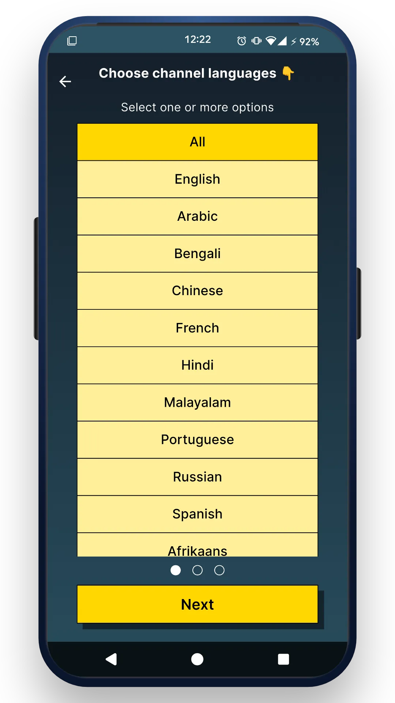

我用 orbitv 搭了一条每周追踪国际新闻的零切换工作流
作为一个长期关注国际局势的人，以前每周要在四五个新闻应用间跳来跳去。现在用 orbitv 一套打通，从发现频道到大屏收看，少了至少两次手动切换。
我每周要做一件事：追踪三到五个国家的新闻动态，偶尔还要抓点精彩画面存起来。这件事说起来简单，但以前的流程着实折腾了好一阵。
旧流程是这样的：手机上装了央视新闻、BBC、法广、NHK 四五个 app，每周固定时间挨个打开刷一遍。想找个特定国家的新闻，要么在应用内搜索，要么跳到浏览器里搜完再跳回来。看到有意思的画面想存一张，还得按电源键加音量键来个系统截图。周末想在电视上看，又得掏出手机找 Chromecast 投放，每次都要等几秒配对。整套流程下来，光是应用间切换就有二十多次，更别说每个 app 界面逻辑还不一样——BBC 的收藏夹在底部导航栏，法广在右上角菜单，想回看上期存的内容还要重新适应一遍操作。
真正让我想改流程的契机，是上周想找一条巴西世界杯预选赛的新闻画面。我习惯性地打开 BBC，搜不到；又跳去央视，没有相关报道；最后绕了一大圈在 Twitter 上找到了片段。那一刻我意识到，我手里缺的不是某几个新闻来源，而是一个能统一调度全球频道的入口。orbitv 就是在这个节点上被我拉进工作流的。
新流程：一条链管到底
orbitv官网上写得很清楚，这套核心入口逻辑比我用过的任何新闻聚合 app 都清晰。它把全球 100 多个国家的频道统一索引，按大洲、国家、语言三层维度筛选。我现在的工作流是这样的：
第一步：发现频道。 每周一早上打开 orbitv，进入地图视图，先点一遍我关注的几个大洲，再进入具体国家。orbitv 会把这个国家所有可用的频道列出来——比如乌克兰分类下能找到基辅本地新闻台，阿根廷分类下有 TyC Sports 这类体育台。比在各个 app 里挨个翻要高效太多，而且不需要在不同地区版本间切换账号。
第二步：筛选和收藏。 找到靠谱的频道后，点一下收藏按钮，它会自动进 Favorites 列表。orbitv 的 Favorites 是登录账号后跨设备同步的——这一点直接解决了我以前收藏夹散落在不同 app 里的问题。手机上收藏的频道，晚上打开电视原生版 orbitv，列表里自动就有了。
orbitv 原生电视版专为遥控器操作优化，界面布局完全不同手机端，横向滚动为主，D-pad 方向键全程覆盖所有操作。我把它装在了家里的 Android TV 盒子上，晚上坐在沙发上用遥控器导航 Favorties 列表，上下键切换频道，确认键播放，左右键退出回到列表——整个过程不需要摸手机。

第三步：观看和留存。 播放过程中想存一张画面怎么办？orbitv 内置了播放器截图，控制栏里一个相机图标，点一下就保存到系统相册。没有组合键，没有暂停等待，抓拍进球瞬间或新闻现场图的时候比系统截图快至少一秒——这一秒的差区别太大了，以前按慢一步画面就切走了。保存的截图不带水印，纯视频画面，直接发朋友圈或微信群都行。
实操中最容易断链的两个环节
流程跑了三周，有两个地方容易卡壳，现在已经摸出规律了。
第一个是 Android TV 侧载。 orbitv 官方提供 Android TV 和 Amazon Fire TV 的原生版本，但不是所有地区的应用商店都能搜到。我家的小米盒子国际版在 Google Play 商店里搜不到 orbitv，直接侧载 APK 解决。但这里有个坑：不能用手机版 APK。 我第一次拿手机版的 APK 往电视上装，装完界面全错——按钮错位、遥控器没反应、有些区域点不到。后来才知道 Android TV 有专门的 APK，虽然包名相同但内部布局完全不一样。获取 TV 专用 APK 的渠道有两个：要么从 Aptoide TV 市场搜，要么从官方下载拿。传输也简单，U 盘复制最稳，或者同一 Wi-Fi 下用 AirDroid 局域网传。具体的侧载步骤和常见问题排查，orbitv 的文档里有更详细的图文说明。
第二个是频道可用性随源站波动。 orbitv 的索引不是实时同步的，某个频道今天能看明天可能就换地址了。我刚开始的时候点了收藏却打不开，以为是 orbitv 的问题，后来发现是源站自己下线了。解决办法也简单：orbitv 同一个内容通常有多个源，换同类频道试试就行。如果长期关注某个国家的新闻，多收藏两三个该国的频道作为备份就好。
效果和边界
这套流程跑下来，每周追踪新闻的时间从原来的四五个 app 来回切换二十多步，变成 orbitv 里地图视图选国家、收藏、大屏收看三步。少了手动复制 URL 分享给电视投屏那一步，也少了切换收藏夹时每个 app 不同逻辑的学习成本。截图比系统方式快一秒，关键时刻不会错过。Favorites 跨设备同步这个功能，是以前用碎片化 app 组合永远做不到的。
但这套流程也有不划算的时候。如果只是偶尔看一眼国内新闻，或者只关注两三个固定频道，那直接开个央视或腾讯视频更快。orbitv 的优势在于「全球索引 + 多端同步」，只关心中文内容的话它的功能是冗余的。另外频道可用性不稳定，源站下线不是 orbitv 能控制的，所以多收藏几个备份频道这个习惯得保持。
还有一个边界要提：Android TV 原生版砍掉了手机端的一些功能——画中画 PiP、后台音频锁屏播放、主题自定义这些在电视版都不支持。电视场景下确实也用不上这些，遥控器操作流畅才是优先级。Personal 自播列表在电视版也只是部分支持，不过我目前还没用到这个功能，影响不大。

总的来说，orbitv 把我以前零散的四个新闻 app + Chromecast 投屏这套组合拳，压缩成了「发现 → 收藏 → 大屏」一条直线。省下来的不只是时间，还有每次想追踪新国家新闻时重新打开浏览器搜半天的心智负担。想搭自己的工作流的话，先从地图视图开始逛，找到你关注的国家，收藏几个频道，晚上拿电视看——这几步做完你大概就能感受到它和单一新闻 app 的本质区别了。
orbitv 的安装包和文档资料我同步放在了三个仓库里——开源项目的完整版本在 GitHub，国内镜像分别到了 Gitee 和 GitCode，按需取用就行。